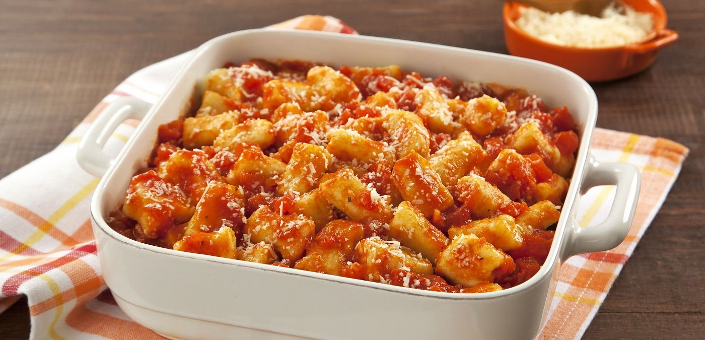

Nhoque de batata e queijo
Ingredientes
- 5 batatas médias
- 1 gema
- 2 litros de água
- 100 g de queijo parmesão ralado
- 1/2 xícara de farinha de trigo
- 1 colher de café de sal
- 250 g Molho de tomate
Modo de Preparo
- Coloque a água para ferver com um pouco de sal e cozinhe as batatas por aproximadamente 15 minutos.
- Amasse as batatas e junte a gema, o queijo parmesão e o sal.
- Vá adicionando a farinha de trigo aos poucos o suficiente para que a massa não grude nas mãos.
- Depois, misture bem até obter uma massa homogênea.
- Enfarinhe uma mesa ou pia, e ponha a massa sobre ela.
- Enrole a massa para cortar em cubos pequenos.
- Coloque para ferver 2 litros de água, quando levantar fervura, coloque parte dos nhoques.
- Retire e cubra com o molho de tomate.
- Sirva imediatamente.